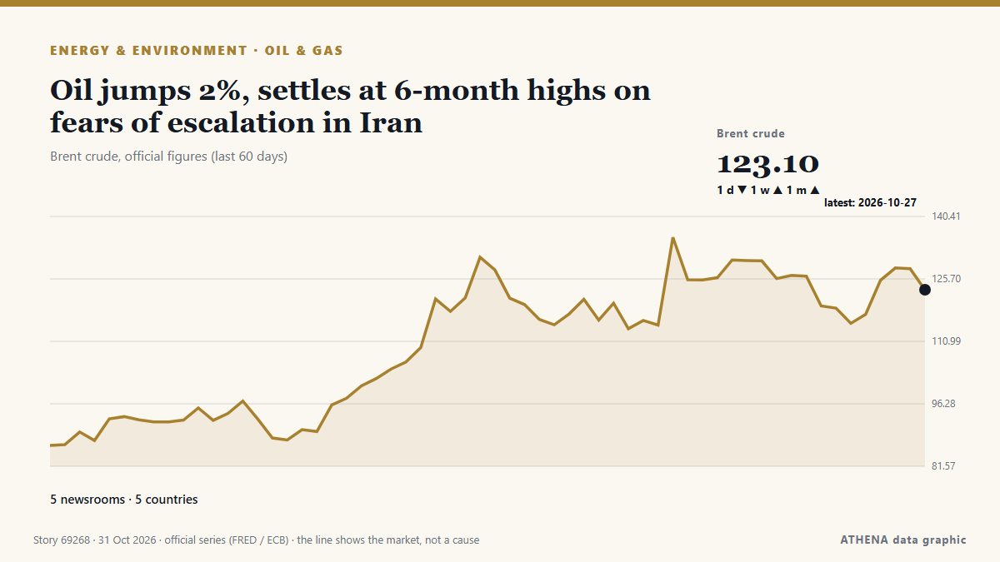

Πετρέλαιο & φυσικό αέριο
| 18 Οκτ | 0 |
|---|---|
| 19 Οκτ | 0 |
| 20 Οκτ | 0 |
| 21 Οκτ | 0 |
| 22 Οκτ | 1 |
| 23 Οκτ | 1 |
| 24 Οκτ | 1 |
| 25 Οκτ | 4 |
| 26 Οκτ | 3 |
| 27 Οκτ | 7 |
| 28 Οκτ | 1 |
| 29 Οκτ | 1 |
| 30 Οκτ | 3 |
| 31 Οκτ | 0 |
Οι τίτλοι των ειδήσεων παρουσιάζονται στα αγγλικά, όπως δημοσιεύτηκαν.

Oil jumps 2%, settles at 6-month highs on fears of escalation in Iran
Oil prices jumped more than 2 percent on Friday and settled at their highest levels since the end of April, as traders braced for a potential escalation in the Iran war after the U.S. midterm… από The Korea Times
Bodies Discovered After Rig Sinks Offshore Gabon
'An underwater remotely operated vehicle has located the bodies of three individuals', Borr Drilling revealed. από Rigzone
US touts role in Gulf oil exports as CENTCOM chief flies over Hormuz Strait
LONDON: The chief of US Central Command, Brad Cooper, flew over the Strait of Hormuz in a CH-47 Chinook helicopter on Sunday as the command said US forces had helped Gulf partners export more than… από Arab News
Brent crude price rises by nearly 2.5% on ICE exchange
As of 1:24 p.m. Moscow time, Brent futures were up 2.45% at $113.51 per barrel. από TASS (English)
QatarEnergy becomes largest buyer of US LNG with new 20-year Woodside deal
QatarEnergy signs a 20-year agreement to buy 3 million tonnes of US LNG annually from Woodside Energy, becoming the largest US LNG buyer. από Arabian Business
UK Rules Out Winter Energy Shortages as Gas Prices Soar
There is no risk of power or gas outages during this winter in the UK, as there will be sufficient generation and gas supply, the National Energy System Operator has said in its early winter outlook. από OilPrice.com
Trump’s Russian diesel deal benefits Moscow more than US consumers, experts say
Trump’s diesel deal gives Moscow cash and leverage, while Ukraine is pressed to give up one of its few advantages on the battlefield and in negotiations, experts and U.S. lawmakers said. από Defense News
Russia to Extend Diesel Export Ban, Use Quotas to Fulfill U.S. Deal, Sources Say
The current ban on diesel exports is due to expire on Oct. από The Moscow Times
Price of Brent oil up above $114 per barrel on ICE first since May
The price of futures contracts of WTI crude oil reached $100.97 per barrel. από TASS (English)
Tanzania announces first major natural gas discovery in a decade
Tanzania has announced its first natural gas discovery in a decade, with an estimated 223 billion cubic feet found at the Kasa-1X ST2 well in the Mnazi Bay area. από Africanews (English)
Iraqi PM al-Zaidi in Damascus to Discuss Oil, Economic Ties
Iraqi Prime Minister Ali al-Zaidi met Syrian President Ahmed al-Sharaa in Damascus to discuss economic, oil and security cooperation, including the Banias pipeline. από Kurdistan24 (English)
Trump-Putin diesel deal has not lowered US fuel prices – WSJ
US diesel prices have risen by 7 cents since Trump announced a deal with Russia on fuel supplies. από Ukrainska Pravda (English)
Oil prices fall as peace hopes offset fears of growing Middle East conflict
Oil prices fell on Thursday, paring gains made a day earlier, as hopes for peace talks took the edge off renewed concerns over Middle East supply disruptions from escalating regional conflict. από Business Recorder
The oil market should brace for a forever stalemate in Iran
Despite public statements, Iran and the US both have good reasons to extend the impasse. από The Business Times
Oil prices decline after diplomatic push in Iran war
Oil prices declined on Thursday as traders assessed new diplomatic efforts in the Middle East, aimed at averting potential US military action against Iran. από The National
Oil prices rise after attack on Saudi Arabian refinery reignites supply concerns
Oil prices rose on Wednesday after an attack on a refinery in Saudi Arabia, the world's biggest crude exporter, renewed concerns around the risks to supply in the Middle East stemming from the… από MyJoyOnline
Trump shows off tanker with ‘1m barrels of oil’ and floats Venezuela as 51st state
President at Texas campaign rally hails deal struck with post-Maduro government as ‘greatest oil victory in history’ Donald Trump suggested Venezuela become the 51st state of the United States on… από The Guardian
Trump drastically loosens oil and gas methane rules
The US president made the announcement at a rally in support of Texas attorney general Ken Paxton, who faces a tough battle for a US Senate seat in the midterm elections. από Free Malaysia Today
Saudi Arabia, Singapore announce plans for crude oil storage facility by 2027
Saudi Arabia and Singapore's energy ministries announced on Monday their joint intention to establish a crude oil storage arrangement in Singapore, aimed at strengthening energy security and supply… από Saudi Gazette